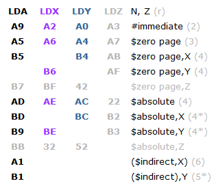
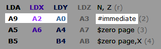
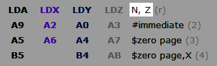
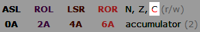
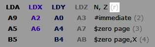

Содержание
На изображении показаны все 56 инструкций процессора и режимы адресации, которые они могут использовать. Инструкции разделены по категориям, каждая категория содержит некоторое количество дополнительной информации.
Для разбора некоторой информации на изображении возьмем в пример категорию инструкций загрузки байта в регистры.

Название точно такое же, как отображается в Debugger'е.

Опкодом определяется режим адресации. Сам режим указан справа от опкодов.

Если обратить внимание на опкоды инструкций с участием различных регистров и режимов адресаций, можно заметить некоторые сходства. Это поможет быстрее их запомнить.
Количество тактов, затрачиваемое процессором на выполнение инструкции с этим режимом адресации. В некоторых случаях количество тактов отмечено звездочками, которые означают, что при определенном условии будет дополнительно затрачен +1 такт (*) или +2 такта (**).

Количество затраченных тактов можно отслеживать в Debugger'е по счетчику CPU cycles.
Условия для затраты дополнительных тактов описаны в справке по режимам адресации.
Флаги, состояние которых будет обновлено при выполнении инструкции.

Для инструкций

Поскольку состояние флага C не учитывается при выполнении инструкций

Тип брейкпоинта Read и/или Write, который сработает в случае попытки процессора выполнить инструкцию с участием адреса, указанного в условии брейкпоинта.

Инструкции, опкоды и некоторые разновидности режимов адресации, отмеченные серым цветом, существуют только в модифицированном эмуляторе Mednafen. В основном это инструкции с участием нового регистра Z.